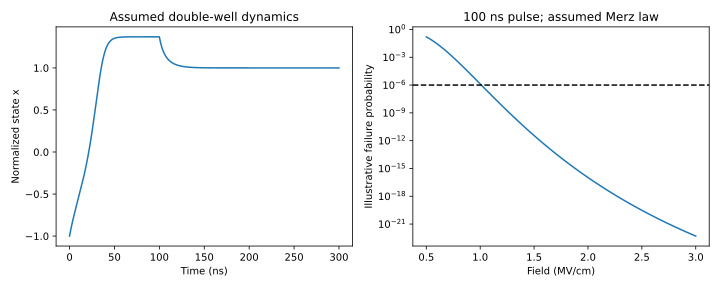

Chapter 4 · Device physics · 10–14 hours
Programming, reading, and reliability
When does a larger memory window buy a better memory?
A device can acquire a larger threshold separation while also requiring harsher write pulses, suffering greater disturb, or drifting more rapidly after programming. “Larger memory window” is therefore an incomplete objective. We need to follow a device through its entire operational history: initial preparation, programming, delayed reading, repeated access, and eventual failure.
Prerequisites: Chapters 1–3. Objectives: distinguish FeCAP, FeFET, and tunnel-junction sensing; relate programming to fields and time; separate memory window from retention and endurance; and derive a constrained reliability calculation with stated uncertainties.
4.1 Three ways to read polarization
A ferroelectric capacitor, or FeCAP, stores information in a polarization state between electrodes. A conventional switched-charge read applies a pulse and senses whether substantial switching charge appears; if the read switches the state, restoration is necessary. A field-effect transistor with a ferroelectric gate, or FeFET, uses polarization and associated charge to change channel conduction. Reading with a small gate bias can avoid intentional polarization reversal, but repeated reads can still disturb traps or state.
A ferroelectric tunnel junction uses a thin barrier whose transmission depends on the polarization state and interface potential. A low read voltage measures resistance rather than switched charge. The exponential sensitivity of tunneling to thickness can produce strong state contrast and strong variability simultaneously. None of these sensing methods is interchangeable with a conventional DRAM capacitor, whose stored free charge normally leaks away and requires refresh.
Let $V_{T,H}$ and $V_{T,L}$ be thresholds extracted at the same drain bias, current criterion, and delay after the two write operations. Define memory window $\Delta V_T=V_{T,H}-V_{T,L}$. The definition is operational. Swept-transfer hysteresis at one sweep rate is not necessarily the pulsed memory window relevant to use. A large polarization loop can coexist with a small read window because screening and semiconductor coupling intervene. Wang thesis, section 3.3.

4.2 Programming is a field-and-time problem
A write pulse must drive the internal ferroelectric field through a state-changing trajectory. Gate voltage alone does not specify that field because voltage also drops across the interface dielectric and semiconductor. Increasing pulse amplitude can switch more domains or switch them faster, while increasing electric stress and charge injection elsewhere. Pulse duration, rise time, polarity, and initial state must accompany a quoted programming voltage.
A useful empirical teaching law is $\tau(E)=\tau_0\exp(E_a/|E|)$, where $\tau$ is a characteristic switching time, $\tau_0$ a prefactor in seconds, and $E_a$ an activation-field parameter in V/m. This Merz-type form encodes rapid acceleration with field. It does not identify a unique nucleation mechanism or account for every film's distribution of switching times.
If switching is further idealized as a Poisson event with constant rate $1/\tau$ during a pulse of duration $t_p$, the probability of remaining unswitched is $p_f=\exp(-t_p/\tau)$. To require $p_f\le p_{\max}$, rearrange to $t_p\ge\tau\ln(1/p_{\max})$. This is a conditional deduction from an assumed hazard law, not an empirical reliability guarantee.
The project takes $\tau_0=1$ ns, $E_a=2$ MV/cm, and $t_p=100$ ns, all synthetic choices. It sweeps field from 0.5 to 3 MV/cm and finds the lowest sampled field meeting $p_f\le10^{-6}$. This constrained problem is more useful than minimizing voltage without a reliability requirement. Adding a measured distribution of switching times would change the required margin and should be the next experimental refinement.
4.3 Screening can help one observable and hurt another
A sheet of trapped charge partly screens polarization. Depending on location and sign, that can stabilize a polarized state, shift threshold, or reduce the electrically visible memory window. A larger threshold window in a multilayer structure can therefore reflect coupled polarization and charge dynamics rather than “more ferroelectricity.” The interlayer and oxidant studies are important precisely because they investigate such coupled mechanisms. Interfacial-charge study; ALD-oxidant study.
A minimal occupancy model makes the distinction concrete. Let $f_t\in[0,1]$ be the fraction of occupied traps. With capture time $\tau_c$ and emission time $\tau_e$, write $\dot f_t=(1-f_t)/\tau_c-f_t/\tau_e$. At fixed conditions, the equilibrium occupancy is $f_{t,\infty}=\tau_e/(\tau_c+\tau_e)$ and the relaxation time is $(1/\tau_c+1/\tau_e)^{-1}$. These expressions follow by collecting the constant and linear terms in the differential equation.
If trap density per area is $N_t$, the charge contribution is $Q_t=-qN_tf_t$ for electron traps under the stated convention. The threshold shift then includes $-Q_t/C_{\mathrm{eff}}$ with a location-dependent effective electrostatic coupling. Changing the delay after a pulse changes $f_t$ and hence the read threshold even if polarization stays fixed. That is why immediate read-after-write and long-delay read can tell different stories.
4.4 Retention requires a clock and a temperature
Retention is persistence of distinguishable information over a stated time under stated conditions. A static bistable energy function proves two minima, not a ten-year lifetime. Thermal fluctuations, depolarization, domain nucleation, charge emission, and interfaces provide escape pathways. The relevant activation barrier need not equal bulk barrier density multiplied by the whole device volume.
For a single thermally activated escape path, an illustrative mean time is $\tau_r=\tau_{r0}\exp(\Delta U/(k_BT))$, where $\Delta U$ is a barrier energy and $\tau_{r0}$ an attempt-time scale. Taking logarithms gives $\ln\tau_r=\ln\tau_{r0}+\Delta U/(k_BT)$. A straight line versus $1/T$ is consistent with one constant activation barrier; curvature or mechanism changes invalidate simple acceleration to room temperature.
Using an assumed 0.7 eV barrier and 1 ns prefactor gives a retention time of only hundreds of seconds at 300 K, not years. The point is to test the consequence of the assumption rather than choose a pleasing label. For equal barriers, changing from 300 K to 358 K accelerates the escape rate by $\exp[(\Delta U/k_B)(1/300-1/358)]$. Temperature uncertainty is amplified exponentially, so reporting a single lifetime without a model range is misleading.
The retention-surrogate preprint accelerates a TCAD-based retention calculation for a specified configuration. A surrogate trained against a simulator inherits the simulator's calibration limits. Fast agreement with TCAD does not independently validate ten-year measured retention, nor does inference speed include the one-time cost of generating its training data. Physics-informed retention analysis.
4.5 Endurance, first-switch damage, and test conventions
Endurance is the number of stress cycles before a defined failure criterion is crossed. The criterion could be memory-window closure, error probability, leakage, breakdown, or a read-current margin. Different criteria and pulse histories produce different reported cycle counts. Even “one cycle” must specify whether it includes both programming and erasing.
The first-switch study compares ferroelectric devices with an equivalent conventional MOS reference and uses electrical characterization to identify substantial interface damage from the first polarization-switching event. Later cycling generates additional traps. The physical lesson is that early damage need not be a tiny extrapolation of long-run fatigue. An aging model fitted only after conditioning can miss the initial transition. Ravikumar et al., first-switch study.
The radiation study adds another dimension: a device can preserve a window under particular ionizing doses while remaining limited by ordinary cycling or thermal processing. Radiation hardness is not synonymous with endurance or universal reliability. Dose rate, bias during exposure, particle or photon type, post-exposure annealing, and the comparison stack must accompany a ratio. The paper is evidence for a device-level comparison, not a space-qualified storage product. Laminated-stack radiation study.
4.6 Two models, two questions
Run python -X utf8 projects/stack.py switching. Its first calculation integrates a dimensionless double-well relaxation law, $\tau\dot x=x-x^3+v$, with $\tau=20$ ns. It tests whether a pulse moves the state from the negative well to the positive well and whether the state remains after the pulse. Its second calculation uses the separate empirical switching-time law above. The two models are deliberately not fitted to each other; they answer different teaching questions.

A complete device optimization would minimize write energy or voltage while constraining error, latency, retention, endurance, and breakdown. The present project solves only the stated switching constraint over a finite field grid. It is a useful baseline because its omissions are named and its limiting behavior can be checked.
4.7 Exercises and solutions
1. Pulse duration for a reliability target
If the characteristic switching time is 5 ns under a constant-hazard approximation, what pulse width makes unswitched probability at most $10^{-6}$?
Solution. $t_p\ge5\ln(10^6)$ ns, or approximately 69.08 ns. This excludes pulse rise time, distributions, and write verification. A measured long tail can require a larger duration than this single-rate estimate.
2. Trap relaxation after a write
Take $\tau_c=2$ µs and $\tau_e=8$ µs. Find equilibrium occupancy and relaxation time.
Solution. $f_{t,\infty}=8/(2+8)=0.8$. The effective rate is $1/2+1/8=0.625$ µs⁻¹, so the time constant is 1.6 µs. Starting empty, $f_t(t)=0.8[1-e^{-t/(1.6\,\mu s)}]$. The threshold contribution follows from the trap sheet and electrostatic coupling, not from occupancy alone.
3. An infeasible optimum
An unconstrained optimizer selects the minimum tested write voltage, but its switching error is 0.1. The system target is $10^{-6}$. Can the voltage be reported as optimal?
Solution. Only for the unconstrained mathematical problem, which is the wrong engineering problem. It is infeasible for the stated system. Add the reliability constraint and rerun the search; do not conceal the violation in a weighted average of energy and error.
4. Reliability evidence audit
A paper reports a million cycles but samples the memory window only every thousand cycles. What remains uncertain?
Solution. Failures between observations, intermittent read errors, the precise threshold-crossing cycle, and the reliability of individual accesses. The observed endurance is interval-censored relative to the sampling schedule. Reproduce the stress/read sequence and use a criterion matched to the intended use.
You can now state which device metric a measurement establishes and which reliability dimensions remain open. The next chapter asks whether that device can still be read and programmed inside an array.